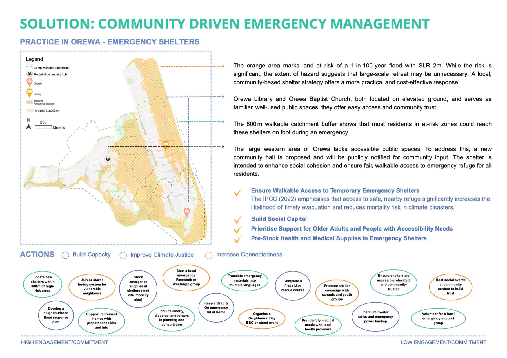
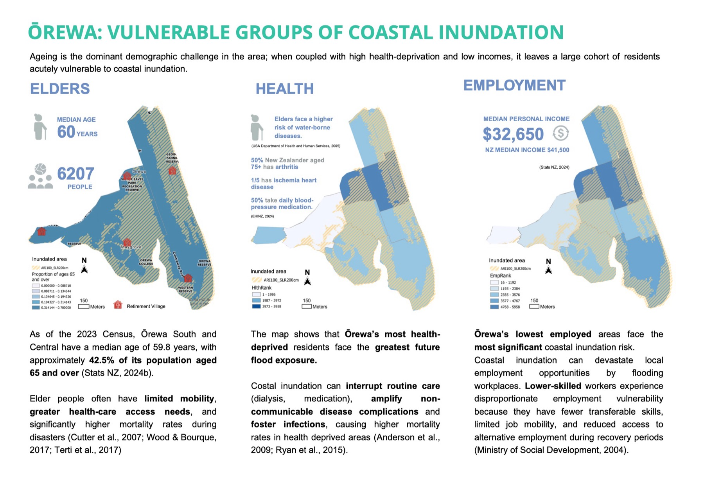
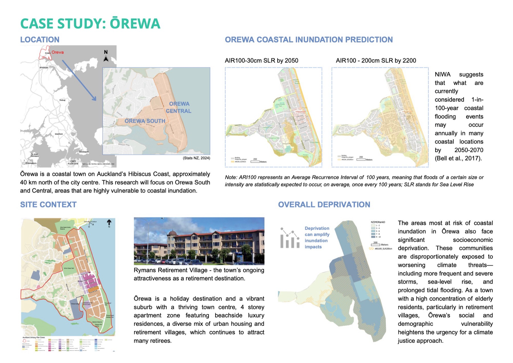
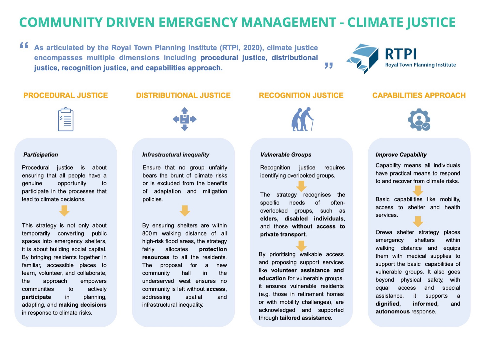

Sheet 03 · Climate adaptation
Climate justice on the Ōrewa coast
A community-based emergency shelter strategy for Ōrewa, a coastal town north of Auckland where an ageing population meets rising seas.
- Year
- 2025
- Context
- University of Auckland, research project
- Role
- Individual project
- Methods
- GIS overlay mapping, case study, climate justice framework
- Data
- 2023 Census, flood and sea-level projections
- Location
- Ōrewa, Hibiscus Coast, Auckland

01The challenge
Sea levels around Auckland are projected to rise by about 30 cm by 2050 and by up to 2 m by 2200 under a high-emissions scenario. In Ōrewa South and Central, the median age is 59.8 and more than four in ten residents are 65 or over, while median personal income sits well below the national figure. The people most exposed to flooding are often the least able to move away from it.
02Who is most exposed
Overlaying age, health deprivation and employment deprivation on the projected flood extent showed where vulnerability and hazard coincide — and where a response would matter most.


03Strategy
Large-scale managed retreat is not the only answer. Building on trusted, familiar community buildings — and on precedents such as Machans Beach Community Hall in Queensland, used as a shelter during ex-Cyclone Jasper in 2023 — the strategy proposes a walkable network of emergency shelters, supported by actions residents can take themselves, from buddy systems for vulnerable neighbours to emergency information in several languages.
The strategy is then tested against the RTPI’s four dimensions of climate justice, with clear roles for central government, the council, NGOs, health services and residents.

Boards include Esri basemaps, Auckland Council charts and data, and case-study photographs credited on the boards. Climate justice framework: Royal Town Planning Institute (RTPI).